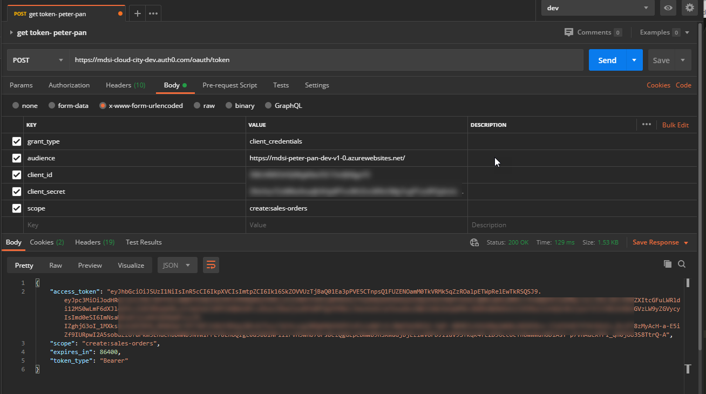

peter pan
Peter Pan is a RESTful API for Comcast to create sales orders with MDSi.
Peter Pan is a RESTful API for Comcast to create sales orders with MDSi.
Peter Pan implements OAuth2 and OpenID Connect as its security architecture. Our Security Token Service (STS) uses JSON Web Tokens (JWT) as bearer tokens.
GET https://mdsi-cloud-city-uat.auth0.com/.well-known/openid-configuration POST https://mdsi-cloud-city-uat.auth0.com/oauth/token https://mdsi-peter-pan-uat-v1-0.azurewebsites.net/
GET https://mdsi-cloud-city-prd.auth0.com/.well-known/openid-configuration POST https://mdsi-cloud-city-prd.auth0.com/oauth/token https://mdsi-peter-pan-prd-v1-0.azurewebsites.net/Access tokens contain your credentials. Please be very judicious about handling these tokens. Anyone who has your access token can use it as if they had your client ID and secret. Access tokens are valid for 24 hours.
To obtain the requisite API keys, please contact us at development@mdsiinc.com. You'll need three things to access the API, each manually obtained by contacting MDSi.
Set the content-type in your header as follows:
The following values must be x-www-form-urlencoded in the body of your request and passed to the token endopoint:
The following scopes must be requested when obtaining an access token:
Here is a screen shot of using Postman to obtain a security token from our STS.
Once you have your access token, you need to pass it along with your static function key in the headers to the endpoint. Note that the content-type for the business APIs is JSON, not x-www-form-urlencoded.